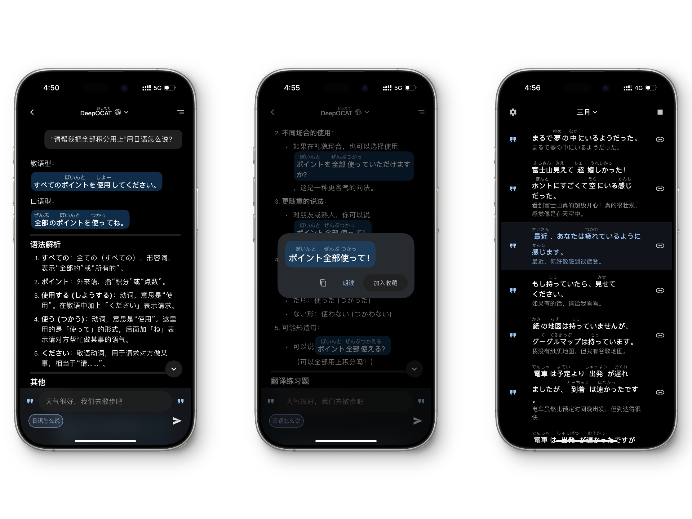
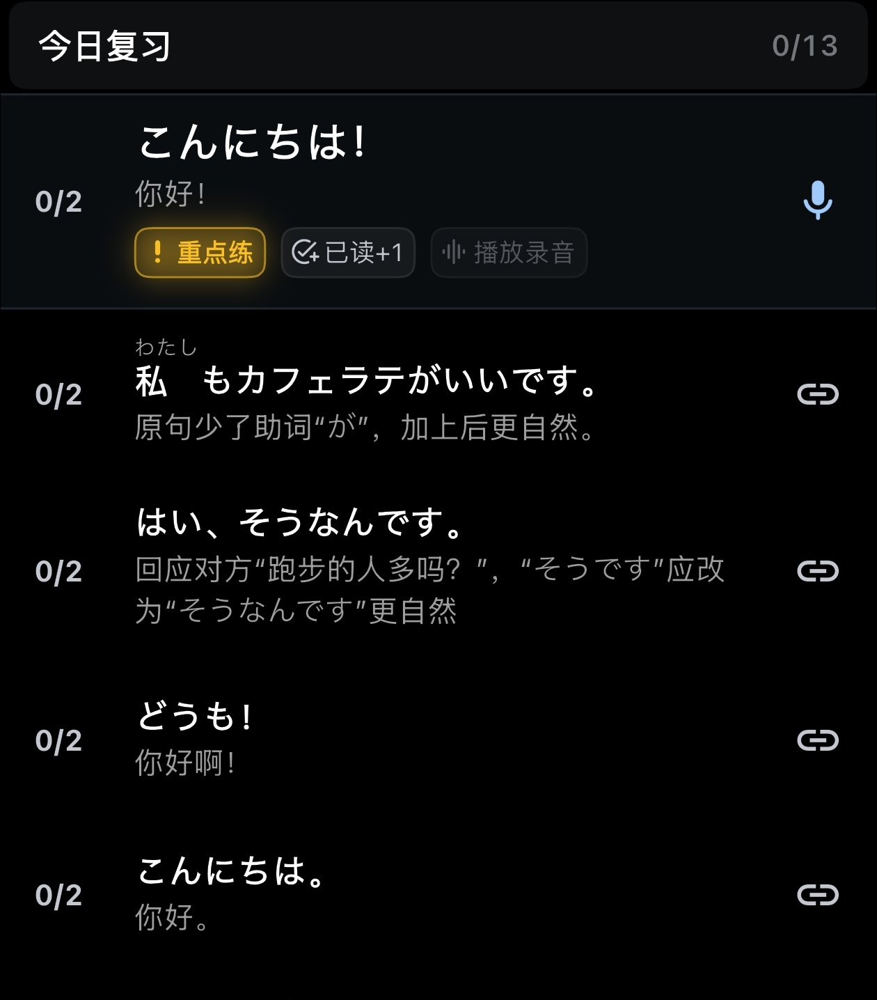

OCAT 到底是个什么工具？一份快问快答带你看懂
OCAT 主打句子本位的外语学习方式——不背单词表，从自己想表达的句子出发，AI 帮你转成地道外语后收藏反复练。整理了 7 个最常被问的问题，帮你判断要不要装。
整理一篇关于 OCAT 的快问快答——选了 7 个真有人在问的问题，直接给结论，不多绕弯。
它是什么？一句话说清
OCAT官网 是一个以「句子本位」为核心的外语学习工具。简单说：你脑子里冒出一句想说的母语，它帮你转成地道外语，你觉得有用就收藏，然后反复播放、测试、跟读把它练熟。
它不做单词表，不做按部就班的课程，不做大词典。定位更接近一个个人表达素材采集器——帮你把 AI 生成的地道句子，变成自己能长期收藏、反复磨练的句库。

谁适合用它？
有明确表达欲但卡在「不知道这句话怎么说」的人。比如：
- 学日语想在旅行前快速攒一批实用句子，不想从五十音重新啃起
- JLPT 备考，想把文法点变成能说出口的例句而不是只会选择题
- 在日生活，遇到真实场景需要立刻掏出一句合适的话
- 口语卡在瓶颈期，总觉得说来说去还是那几句
反过来，如果你是零基础到连目标语言的发音系统都不清楚，OCAT 可能不够——它不教基础，只帮你把「你想说的」变成「你能说的」。
怎么装？什么平台？
OCAT 有网页版和 App。网页版直接在浏览器里用，不用装任何东西，注册账号就能开始。手机端从下载页面拿安装包，Android 也有国内应用市场的版本。
值得提一句的是，它的桌面浏览器版体验相当完整——采集句子、整理收藏夹、播放、跟读，全流程在一个页面里完成，不需要来回切标签。
核心怎么用？五个阶段循环
OCAT 的学习流程可以拆成五部，循环跑：
1. 采句：想到一句话，问 AI 怎么说，点开回复里的句子，听发音、看注音、看翻译，觉得有用就收藏。
2. 收藏：收进来的句子自动带原文、翻译、注音。你可以分组、加标签、写笔记、标记掌握状态。每句都像一张可反复听练的表达卡片。
3. 播放：收藏页的播放不是简单通读一遍。可以调语速、间隔、重复次数，选放不放翻译，甚至设置第二遍降低音量。后台和锁屏也能继续播。
4. 测试：隐藏外语正文，只留翻译等线索，先在脑子里回想原句，想不起再揭晓。检验的是「想不想得起」，不是「看没看过」。
5. 跟读：影子跟读是 OCAT 最重要的主动练习。页面聚焦当前句子，引导你「听一句、跟读一句、录下来、再听自己」。
这个循环的好处是每句都来自你自己的表达需求，不是别人给的任务，动机完全不一样。
收藏夹怎么整理才不乱？
收了几十上百句之后最怕乱。OCAT 给了三个工具配合用：
标签：跨收藏夹灵活分类。一个句子可以加多个标签，比如标注难度（简单/困难）、语气（礼貌体/随意）、用途（紧急场合/每日闲聊）。搜索时可以快速筛选同类型的句子集中复习。
笔记：写在句子上的个人备注。比如「这句里的『ます』是礼貌体，对朋友别用」，或者「気を遣う vs 気になる：前者是关心照顾，后者是在意介意」。播放和跟读时笔记也会显示，边听边回顾自己之前的理解。
掌握状态：每句可以标「未学 / 学习中 / 已掌握」三种。标记之后，OCAT 的记忆曲线算法会更精准地安排复习节奏——已掌握的暂时排除，学习中的进复习列表。

不想从零采怎么办？公共句库了解一下
OCAT 提供公共句库合集——官方和社区整理的成套主题句库，可以一键引入变成你的收藏夹。适合两种情况：想先获得一批基础句子快速起步，或者想围绕某个主题（日本旅行、JLPT 文法、商务日语）集中练习。
目前公开的主题包括：日本旅行实用日语（120 句高频表达）、JLPT N1/N5 文法原创例句、商务日语高频职场表达、自然日语口语真实会话、日本生活真实场景、京都方言等。
引入后它就变成普通收藏夹，和自己采的句子完全一样——可以分组、加标签、调顺序、设置播放参数。建议引入后先预览一遍，把真正想练的留下，不想练的删掉，别完全照搬顺序。
日语学日语的朋友，礼貌体和普通体能切换吗？
能，而且切换相当灵活。日语对不同对象说话要用不同语体，搞错了挺尴尬——对长辈用普通体没礼貌，对朋友用礼貌体又生分。OCAT文档里有专门的语气控制说明，主题对话设置里可以指定四种语气：
- 礼貌体：AI 用「ます形」和「です」跟你说话
- 普通体：更随意的口语
- 像朋友一样：普通体还会加语气词（よ、ね、だな）
- 像老师一样：可能混合礼貌体和教学语气
自由追问时也可以随时要求调整，比如「对朋友说会不会太正式？」「换成对公司客户的礼貌说法」「改成敬语版本」。练完之后把不同语体分别收藏进不同收藏夹，标签标清楚，复习时就不会搞混。
和其他语言学习软件比，它特在哪？
市面上的外语学习软件大致分两类：背单词/刷题库的，和找母语者聊天的。OCAT 两边都不沾。
它的独特之处在于：学习的起点是你想说什么，不是教材第几单元。你输入自己脑子里冒出来的母语句子，AI 帮你转成地道外语——采回来的每一句，都是你自己真想表达的东西。这和按词频排序的单词表、按难度递进的课程完全不是一条路。
另外它的收藏夹是核心资产——句库越积越厚，越用越有价值。不像某些 App 考完试就卸载，OCAT 的句库本身就是你长期的个人表达库。
值不值得长期用？
最后一句：如果你学外语是为了真能说出口，OCAT 值得装——它帮你把散落在 AI 对话里的句子收回来，变成自己能反复磨的东西，而且句库会跟着你越用越厚。但如果你是零基础需要系统教发音、教语法的，它太轻，扛不起入门的活。